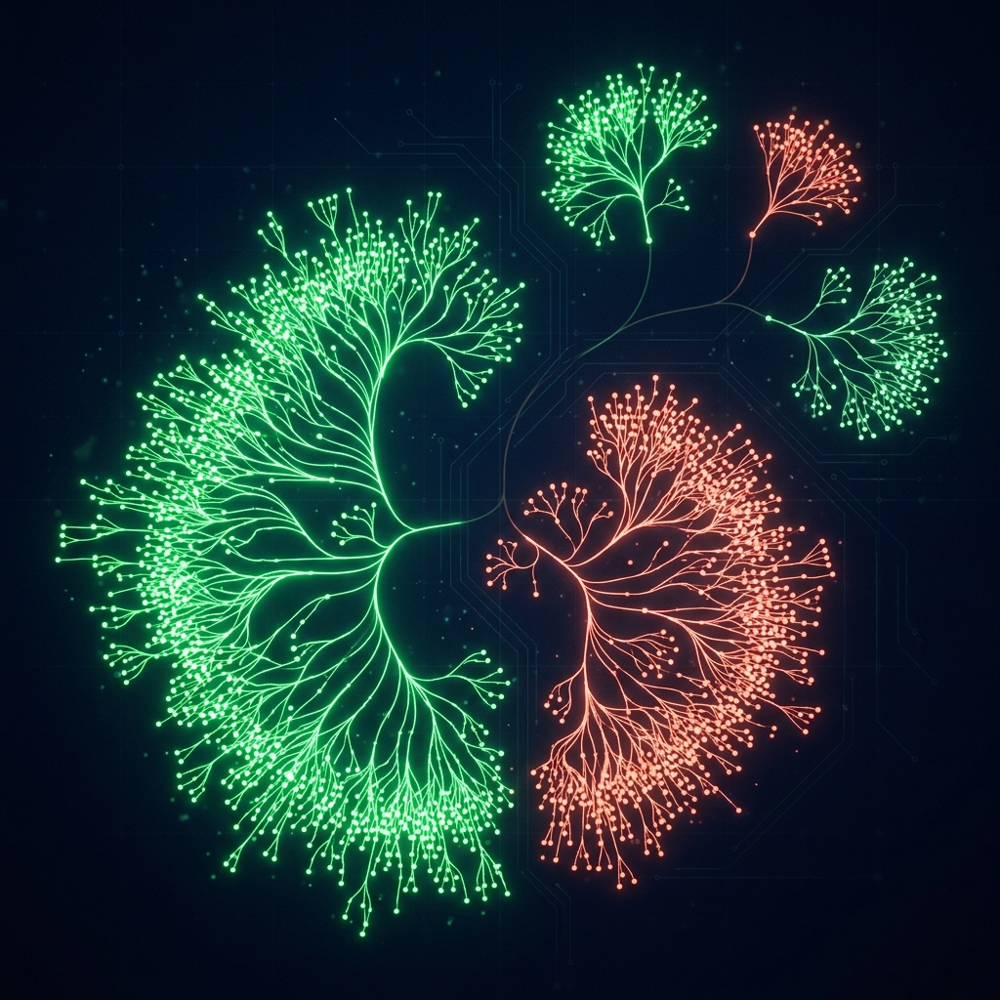
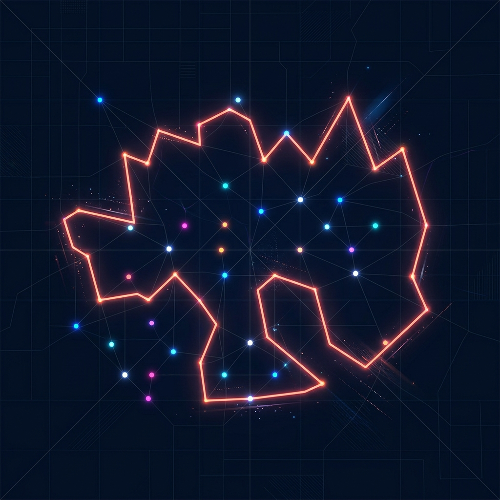

A study of greedy algorithms — Kruskal's and Prim's — for finding the minimum cost connected subgraph in a weighted graph.
Before studying spanning trees, let's define the fundamental structure of a weighted, connected graph.
G = (V, E) with Weight Function w: E → ℝ
A spanning tree is a subset of graph edges that covers all vertices without forming cycles.
Edges in red/rose form Spanning Trees
In a weighted graph, we want to find the spanning tree that minimizes the total cost.
The sum of all edge weights in the spanning tree must be the minimum possible value.
Must remain a tree. Adding any extra edge will create a loop/cycle, ruining spanning property.
If all edge weights in the graph are distinct, then there exists exactly one unique MST.
Imagine a telecommunications provider connecting 5 offices across different cities.
The Problem: Laying down fiber optic cables is extremely expensive. We want to ensure all offices are connected to the network, but we want to spend the absolute minimum amount of capital on cables.
The Solution: Finding the Minimum Spanning Tree provides the optimal cabling topology layout.
Optimal route layout connecting all 5 offices (MST).
All major MST algorithms rely on these two core mathematical theorems:
For any cut (partition of vertices into two sets) in a graph, the edge with the absolute minimum weight crossing the cut must belong to the MST.
→ Relied on by Prim's Algorithm
For any cycle in the graph, the edge with the absolute maximum weight in that cycle cannot belong to the Minimum Spanning Tree.
→ Relied on by Kruskal's Algorithm
Kruskal's is a greedy algorithm that grows the spanning tree by adding edges one by one in increasing order of weight.
Algorithm Kruskal(G): A = ∅ // MST initially empty for each vertex v ∈ G.V: MAKE-SET(v) sort the edges of G.E into nondecreasing order by weight w for each edge (u, v) ∈ G.E: if FIND-SET(u) ≠ FIND-SET(v): A = A ∪ {(u, v)} UNION(u, v) return A
Watch Kruskal's algorithm process edges in ascending weight order. We reject any edge that connects two nodes in the same connected component.
To check if an edge forms a cycle efficiently, Kruskal's uses the Union-Find / Disjoint Set Union (DSU) data structure.
The time complexity is dominated by sorting the edges of the graph, which takes $\mathcal{O}(E \log E)$.
Prim's is a node-based greedy algorithm. It starts from a single vertex and expands outward, picking the cheapest edge connecting to a new node.
Algorithm Prim(G, w, r): for each u ∈ G.V: u.key = ∞ u.π = NIL r.key = 0 Q = G.V // Min-Priority Queue while Q ≠ ∅: u = EXTRACT-MIN(Q) for each v ∈ G.Adj[u]: if v ∈ Q and w(u, v) < v.key: v.π = u v.key = w(u, v) DECREASE-KEY(Q, v, w(u, v))
Watch Prim's algorithm expand node-by-node starting from Node A. At each step, it chooses the cheapest edge leaving the visited nodes frontier.
To quickly fetch the cheapest edge crossing, Prim's relies on a Priority Queue (Binary Heap).
Choosing the right implementation makes Prim's highly efficient for different graph densities.
Both algorithms find the optimal solution, but their performance profiles suit different graph topologies.
| Feature | Kruskal's Algorithm | Prim's Algorithm |
|---|---|---|
| Approach | Edge-Based (sorting and DSU) | Vertex-Based (growing tree frontier) |
| Data Structures | Sorting + DSU (Union-Find) | Priority Queue / Binary Min-Heap |
| Best For | Sparse graphs (fewer edges: $E \approx V$) | Dense graphs (many edges: $E \approx V^2$) |
| Time Complexity | $\mathcal{O}(E \log E)$ | $\mathcal{O}(E \log V)$ |
Minimum Spanning Trees are utilized across a wide variety of practical domains:
Laying electricity grids, gas/water pipes, telephone wires, and computer networks at minimal cost.

Used in hierarchical clustering algorithms (Single-Linkage clustering is equivalent to finding an MST).

Providing high-quality bounds for NP-Hard routing problems (e.g., Christofides' TSP 1.5-approximation).
Minimum Spanning Trees provide critical optimization methods in Discrete Mathematics and computer science.
Any Questions?